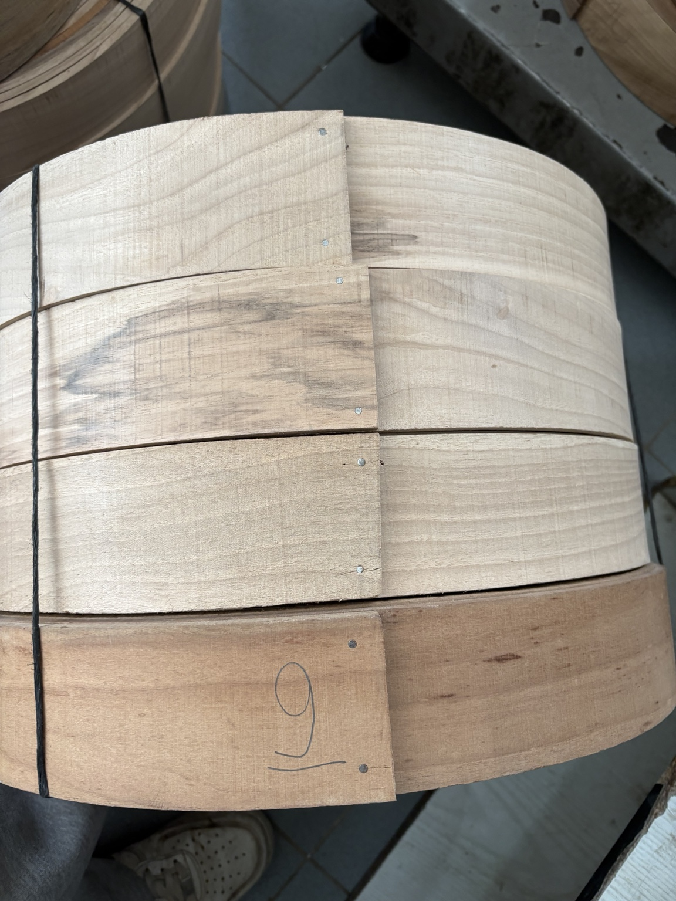
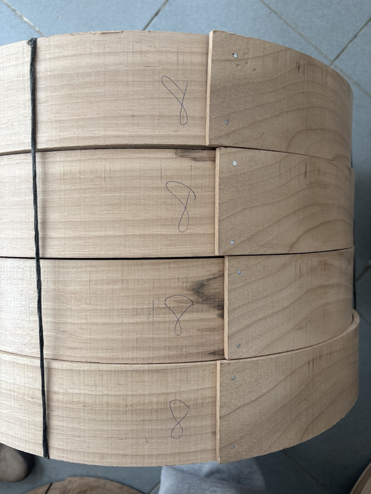

Tef, bendir ve davul için 1. sınıf fırınlanmış kayın ve ceviz ağaçlarından, istediğiniz ölçüde kasnak üretimi.
Özenle seçilmiş fırınlanmış kereste.
Çap ve yükseklik ihtiyacınıza göre.
Düzenli siparişler için uygun fiyat.
Güvenli paketleme ve gönderim.
Her müşteri için aynı ölçü yerine, kullanım amacınıza göre özel üretim yaklaşımı.





Üretimi doğrudan atölyemizde yapıyoruz. Sipariş miktarı ve ölçünüz ne olursa olsun, ihtiyaca göre net bir teklif sunuyoruz.
Toplu siparişlerde işleri işlem bazında gruplayarak verimli üretim yapıyoruz.
Çap, yükseklik, kalınlık, ağaç türü ve adet netleşir.
Siparişteki tüm parçalar ölçülerine göre hazırlanır.
Kıvırma ve form kontrolüyle üretim tamamlanır.
Son kontroller sonrası ürünler güvenli biçimde paketlenir.